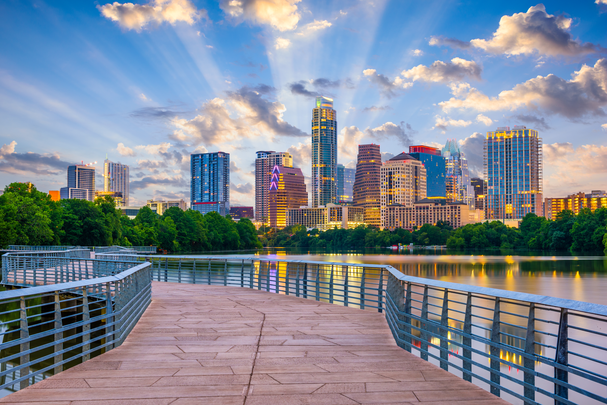

Austin, Texas
Austin (/ˈɔːstɪn/ AW-stin) is the capital city of the U.S. state of Texas. With a population of 961,855 at the 2020 census, it is the 13th-most populous city in the U.S., fifth-most populous city in Texas, and second-most populous U.S. state capital (after Phoenix, Arizona), while the Austin metro area with an estimated 2.55 million residents is the 25th-largest metropolitan area in the nation. Austin is the county seat and most populous city of Travis County, with portions extending into Hays and Williamson counties. Incorporated on December 27, 1839, it has been one of the fastest-growing large cities in the United States since 2010.

Located in Central Texas within the greater Texas Hill Country, it is home to numerous lakes, rivers, and waterways, including Lady Bird Lake and Lake Travis on the Colorado River, Barton Springs, McKinney Falls, and Lake Walter E. Long. Evidence of human activity in the region is estimated to date back at least 11,200 years ago, with early habitation by Clovis peoples and later by American Indian groups such as the Tonkawa. Austin and San Antonio are approximately 80 miles (129 km) apart, and both fall along the I-35 corridor. This combined metropolitan region of San Antonio–Austin has approximately 5 million people. Austin is the southernmost state capital in the contiguous United States and is considered a Gamma + level global city as categorized by the Globalization and World Cities Research Network.
Residents of Austin are known as Austinites. They include a diverse mix of government employees, college students, musicians, high-tech workers, and blue-collar workers. The city's official slogan promotes Austin as "The Live Music Capital of the World", a reference to the city's many musicians and live music venues, as well as the long-running PBS TV concert series Austin City Limits. Austin is the site of South by Southwest (SXSW), an annual conglomeration of parallel film, interactive media, and music festivals. The city also adopted "Silicon Hills" as a nickname in the 1990s due to a rapid influx of technology and development companies. In recent years, some Austinites have adopted the unofficial slogan "Keep Austin Weird", which refers to the desire to protect small, unique, and local businesses from being overrun by large corporations. Ongoing rapid development and gentrification challenge its bohemian roots and fuel nostalgia for “Old Austin.” Since the late 19th century, Austin has also been known as the "City of the Violet Crown", because of the colorful glow of light across the hills just after sunset.

Emerging from a strong economic focus on government and education, Austin has become a center for technology and business since the 1990s. The technology roots in Austin can be traced back to the 1960s, when defense electronics contractor Tracor (now BAE Systems) began operations in the city in 1962. IBM followed in 1967, opening a facility to produce its Selectric typewriters. Texas Instruments was set up in Austin two years later, and Motorola (now NXP Semiconductors) started semiconductor chip manufacturing in 1974. A number of Fortune 500 companies have headquarters or regional offices in Austin, including 3M, Advanced Micro Devices (AMD), Agilent Technologies, Amazon, Apple, CrowdStrike, Dell, Expedia, Facebook (Meta), General Motors, Google, IBM, Intel, NXP Semiconductors, Oracle, Tesla, and Texas Instruments. With regard to education, Austin is the home of the University of Texas at Austin, one of the largest universities in the U.S., with over 50,000 students. In 2021, Austin became home to Austin FC, the first (and currently only) major professional sports team in the city.